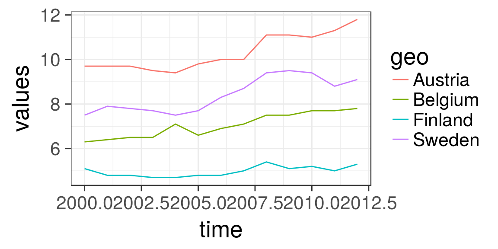
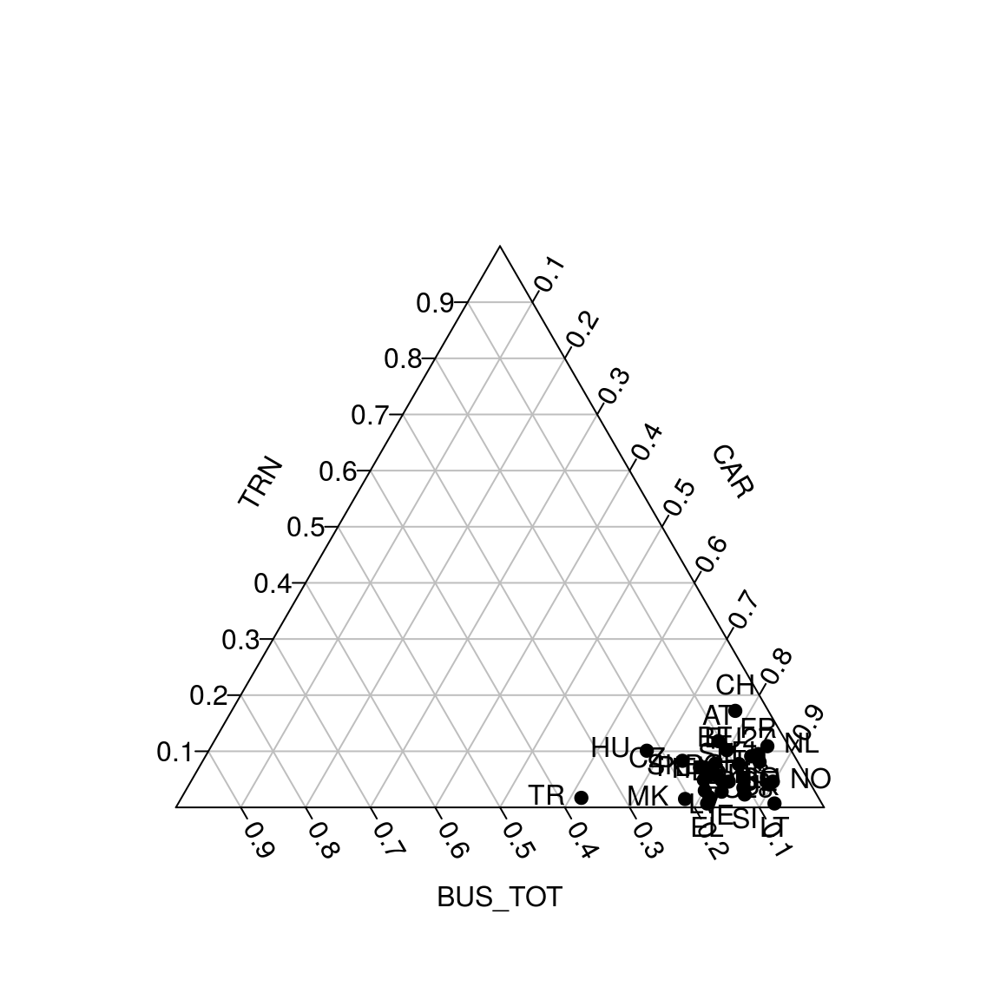

eurostat_tutorial.RmdThis rOpenGov R package provides tools to access Eurostat database, which you can also browse on-line for the data sets and documentation. For contact information and source code, see the package website.
Release version (CRAN):
Development version (Github):
Overall, the eurostat package includes the following functions:
clean_eurostat_cache Clean Eurostat Cache
cut_to_classes Cuts the Values Column into Classes and
Polishes the Labels
dic_order Order of Variable Levels from Eurostat
Dictionary.
eu_countries Countries and Country Codes
eurostat-package R Tools for Eurostat open data
eurostat_geodata_60_2016
Geospatial data of Europe from Gisco in 1:60
million scale from year 2016
eurotime2date Date Conversion from Eurostat Time Format
eurotime2num Conversion of Eurostat Time Format to Numeric
get_bibentry Create A Data Bibliography
get_eurostat Read Eurostat Data
get_eurostat_dic Download Eurostat Dictionary
get_eurostat_geospatial
Download Geospatial Data from GISGO
get_eurostat_json Get Data from Eurostat API in JSON
get_eurostat_raw Download Data from Eurostat Database
get_eurostat_toc Download Table of Contents of Eurostat Data
Sets
harmonize_country_code
Harmonize Country Code
label_eurostat Get Eurostat Codes
search_eurostat Grep Datasets Titles from Eurostat
tgs00026 Auxiliary DataFunction get_eurostat_toc() downloads a table of contents of eurostat datasets. The values in column ‘code’ should be used to download a selected dataset.
# Load the package
library(eurostat)
library(rvest)
# Get Eurostat data listing
toc <- get_eurostat_toc()
# Check the first items
library(knitr)
kable(head(toc))| title | code | type | last update of data | last table structure change | data start | data end | values |
|---|---|---|---|---|---|---|---|
| Database by themes | data | folder | NA | NA | NA | NA | NA |
| General and regional statistics | general | folder | NA | NA | NA | NA | NA |
| European and national indicators for short-term analysis | euroind | folder | NA | NA | NA | NA | NA |
| Business and consumer surveys (source: DG ECFIN) | ei_bcs | folder | NA | NA | NA | NA | NA |
| Consumer surveys (source: DG ECFIN) | ei_bcs_cs | folder | NA | NA | NA | NA | NA |
| Consumers - monthly data | ei_bsco_m | dataset | 27.09.2019 | 27.09.2019 | 1980M01 | 2019M09 | NA |
With search_eurostat() you can search the table of contents for particular patterns, e.g. all datasets related to passenger transport. The kable function to produces nice markdown output. Note that with the type argument of this function you could restrict the search to for instance datasets or tables.
| title | code | type | last update of data | last table structure change | data start | data end | values |
|---|---|---|---|---|---|---|---|
| Volume of passenger transport relative to GDP | tran_hv_pstra | dataset | 12.09.2019 | 12.09.2019 | 2000 | 2017 | NA |
| Modal split of passenger transport | tran_hv_psmod | dataset | 09.09.2019 | 09.09.2019 | 1990 | 2017 | NA |
| Air passenger transport by reporting country | avia_paoc | dataset | 30.09.2019 | 30.09.2019 | 1993 | 2019Q2 | NA |
| Air passenger transport by main airports in each reporting country | avia_paoa | dataset | 30.09.2019 | 30.09.2019 | 1993 | 2019Q2 | NA |
| Air passenger transport between reporting countries | avia_paocc | dataset | 30.09.2019 | 30.09.2019 | 1993 | 2019Q2 | NA |
| Air passenger transport between main airports in each reporting country and partner reporting countries | avia_paoac | dataset | 30.09.2019 | 30.09.2019 | 1993 | 2019Q2 | NA |
Codes for the dataset can be searched also from the Eurostat database. The Eurostat database gives codes in the Data Navigation Tree after every dataset in parenthesis.
The package supports two of the Eurostats download methods: the bulk download facility and the Web Services’ JSON API. The bulk download facility is the fastest method to download whole datasets. It is also often the only way as the JSON API has limitation of maximum 50 sub-indicators at a time and whole datasets usually exceeds that. To download only a small section of the dataset the JSON API is faster, as it allows to make a data selection before downloading.
A user does not usually have to bother with methods, as both are used via main function get_eurostat(). If only the table id is given, the whole table is downloaded from the bulk download facility. If also filters are defined the JSON API is used.
Here an example of indicator ‘Modal split of passenger transport’. This is the percentage share of each mode of transport in total inland transport, expressed in passenger-kilometres (pkm) based on transport by passenger cars, buses and coaches, and trains. All data should be based on movements on national territory, regardless of the nationality of the vehicle. However, the data collection is not harmonized at the EU level.
Pick and print the id of the data set to download:
# For the original data, see
# http://ec.europa.eu/eurostat/tgm/table.do?tab=table&init=1&plugin=1&language=en&pcode=tsdtr210
id <- search_eurostat("Modal split of passenger transport",
type = "table")$code[1]
print(id)[1] “t2020_rk310”
Get the whole corresponding table. As the table is annual data, it is more convient to use a numeric time variable than use the default date format:
Investigate the structure of the downloaded data set:
## Classes 'tbl_df', 'tbl' and 'data.frame': 2587 obs. of 5 variables:
## $ unit : Factor w/ 1 level "PC": 1 1 1 1 1 1 1 1 1 1 ...
## $ vehicle: Factor w/ 3 levels "BUS_TOT","CAR",..: 1 1 1 1 1 1 1 1 1 1 ...
## $ geo : Factor w/ 34 levels "AT","BE","CH",..: 1 2 3 4 5 6 7 8 9 10 ...
## $ time : num 1990 1990 1990 1990 1990 1990 1990 1990 1990 1990 ...
## $ values : num 11 10.6 3.7 9.1 11.3 32.4 14.9 13.5 6 24.8 ...| unit | vehicle | geo | time | values |
|---|---|---|---|---|
| PC | BUS_TOT | AT | 1990 | 11.0 |
| PC | BUS_TOT | BE | 1990 | 10.6 |
| PC | BUS_TOT | CH | 1990 | 3.7 |
| PC | BUS_TOT | DE | 1990 | 9.1 |
| PC | BUS_TOT | DK | 1990 | 11.3 |
| PC | BUS_TOT | EL | 1990 | 32.4 |
Or you can get only a part of the dataset by defining filters argument. It should be named list, where names corresponds to variable names (lower case) and values are vectors of codes corresponding desidered series (upper case). For time variable, in addition to a time, also a sinceTimePeriod and a lastTimePeriod can be used.
dat2 <- get_eurostat(id, filters = list(geo = c("EU28", "FI"), lastTimePeriod=1), time_format = "num")
kable(dat2)By default variables are returned as Eurostat codes, but to get human-readable labels instead, use a type = "label" argument.
datl2 <- get_eurostat(id, filters = list(geo = c("EU28", "FI"),
lastTimePeriod = 1),
type = "label", time_format = "num")
kable(head(datl2))Eurostat codes in the downloaded data set can be replaced with human-readable labels from the Eurostat dictionaries with the label_eurostat() function.
| unit | vehicle | geo | time | values |
|---|---|---|---|---|
| Percentage | Motor coaches, buses and trolley buses | Austria | 1990 | 11.0 |
| Percentage | Motor coaches, buses and trolley buses | Belgium | 1990 | 10.6 |
| Percentage | Motor coaches, buses and trolley buses | Switzerland | 1990 | 3.7 |
| Percentage | Motor coaches, buses and trolley buses | Germany (until 1990 former territory of the FRG) | 1990 | 9.1 |
| Percentage | Motor coaches, buses and trolley buses | Denmark | 1990 | 11.3 |
| Percentage | Motor coaches, buses and trolley buses | Greece | 1990 | 32.4 |
The label_eurostat() allows conversion of individual variable vectors or variable names as well.
Vehicle information has 3 levels. You can check them now with:
To facilitate smooth visualization of standard European geographic areas, the package provides ready-made lists of the country codes used in the eurostat database for EFTA (efta_countries), Euro area (ea_countries), EU (eu_countries) and EU candidate countries (eu_candidate_countries). These can be used to select specific groups of countries for closer investigation. For conversions with other standard country coding systems, see the countrycode R package. To retrieve the country code list for EFTA, for instance, use:
| code | name | label |
|---|---|---|
| IS | Iceland | Iceland |
| LI | Liechtenstein | Liechtenstein |
| NO | Norway | Norway |
| CH | Switzerland | Switzerland |
dat_eu12 <- subset(datl, geo == "European Union (current composition)" & time == 2012)
kable(dat_eu12, row.names = FALSE)| unit | vehicle | geo | time | values |
|---|
Reshaping the data is best done with spread() in tidyr.
library("tidyr")
dat_eu_0012 <- subset(dat, geo == "EU28" & time %in% 2000:2012)
dat_eu_0012_wide <- spread(dat_eu_0012, vehicle, values)
kable(subset(dat_eu_0012_wide, select = -geo), row.names = FALSE)| unit | time | BUS_TOT | CAR | TRN |
|---|---|---|---|---|
| PC | 2000 | 10.4 | 82.5 | 7.1 |
| PC | 2001 | 10.2 | 82.8 | 7.0 |
| PC | 2002 | 9.8 | 83.4 | 6.8 |
| PC | 2003 | 9.8 | 83.6 | 6.6 |
| PC | 2004 | 9.7 | 83.5 | 6.7 |
| PC | 2005 | 9.8 | 83.4 | 6.9 |
| PC | 2006 | 9.6 | 83.4 | 7.0 |
| PC | 2007 | 9.8 | 83.1 | 7.1 |
| PC | 2008 | 9.8 | 82.9 | 7.4 |
| PC | 2009 | 9.2 | 83.7 | 7.1 |
| PC | 2010 | 9.4 | 83.5 | 7.2 |
| PC | 2011 | 9.4 | 83.2 | 7.4 |
| PC | 2012 | 9.5 | 82.8 | 7.7 |
dat_trains <- subset(datl, geo %in% c("Austria", "Belgium", "Finland", "Sweden")
& time %in% 2000:2012
& vehicle == "Trains")
dat_trains_wide <- spread(dat_trains, geo, values)
kable(subset(dat_trains_wide, select = -vehicle), row.names = FALSE)| unit | time | Austria | Belgium | Finland | Sweden |
|---|---|---|---|---|---|
| Percentage | 2000 | 9.8 | 6.3 | 5.1 | 6.9 |
| Percentage | 2001 | 9.7 | 6.4 | 4.8 | 7.3 |
| Percentage | 2002 | 9.7 | 6.5 | 4.8 | 7.2 |
| Percentage | 2003 | 9.5 | 6.5 | 4.7 | 7.1 |
| Percentage | 2004 | 9.5 | 7.1 | 4.7 | 6.9 |
| Percentage | 2005 | 9.8 | 6.6 | 4.8 | 7.1 |
| Percentage | 2006 | 10.0 | 6.9 | 4.8 | 7.7 |
| Percentage | 2007 | 10.0 | 7.1 | 5.0 | 8.0 |
| Percentage | 2008 | 11.1 | 7.5 | 5.4 | 8.7 |
| Percentage | 2009 | 11.1 | 7.5 | 5.1 | 8.8 |
| Percentage | 2010 | 11.0 | 7.7 | 5.2 | 8.7 |
| Percentage | 2011 | 11.3 | 7.7 | 5.0 | 8.7 |
| Percentage | 2012 | 11.8 | 7.8 | 5.3 | 9.1 |
Visualizing train passenger data with ggplot2:
library(ggplot2)
p <- ggplot(dat_trains, aes(x = time, y = values, colour = geo))
p <- p + geom_line()
print(p)
Triangle plot is handy for visualizing data sets with three variables.
library(tidyr)
library(plotrix)
library(eurostat)
library(dplyr)
library(tidyr)
# Some cleaning of the data is required
energy3 <- get_eurostat("nrg_114a") %>%
label_eurostat(dat) %>%
filter(time == "2013-01-01") %>%
mutate(geo = gsub(geo, pattern=" \\(.*", replacement="")) %>%
select(product, geo, values) %>%
group_by(product, geo) %>%
summarise(svalue = sum(values)) %>%
group_by(geo) %>%
mutate(tvalue = sum(svalue),
svalue = svalue/sum(svalue)) %>%
filter(tvalue > 1000) %>% # only large countries
spread(product, svalue)
# Triangle plot
par(cex=0.75, mar=c(0,0,0,0))
positions <- plotrix::triax.plot(as.matrix(energy3[, c(3,5,4)]),
show.grid = TRUE,
label.points= FALSE, point.labels = energy3$geo,
col.axis="gray50", col.grid="gray90",
pch = 19, cex.axis=0.8, cex.ticks=0.7, col="grey50")
# Larger labels
ind <- which(energy3$geo %in% c("Norway", "Iceland","Denmark","Estonia", "Turkey", "Italy", "Finland"))
df <- data.frame(positions$xypos, geo = energy3$geo)
points(df$x[ind], df$y[ind], cex=2, col="red", pch=19)
text(df$x[ind], df$y[ind], df$geo[ind], adj = c(0.5,-1), cex=1.5)
For further examples, see the package homepage.
This tutorial was created with
## R version 3.5.2 (2018-12-20)
## Platform: x86_64-pc-linux-gnu (64-bit)
## Running under: Ubuntu 19.04
##
## Matrix products: default
## BLAS: /usr/lib/x86_64-linux-gnu/blas/libblas.so.3.8.0
## LAPACK: /usr/lib/x86_64-linux-gnu/lapack/liblapack.so.3.8.0
##
## locale:
## [1] LC_CTYPE=en_US.UTF-8 LC_NUMERIC=C
## [3] LC_TIME=en_US.UTF-8 LC_COLLATE=en_US.UTF-8
## [5] LC_MONETARY=en_US.UTF-8 LC_MESSAGES=en_US.UTF-8
## [7] LC_PAPER=en_US.UTF-8 LC_NAME=C
## [9] LC_ADDRESS=C LC_TELEPHONE=C
## [11] LC_MEASUREMENT=en_US.UTF-8 LC_IDENTIFICATION=C
##
## attached base packages:
## [1] stats graphics grDevices utils datasets methods base
##
## other attached packages:
## [1] dplyr_0.8.3 plotrix_3.7-6 ggplot2_3.2.1 tidyr_1.0.0
## [5] rvest_0.3.4 xml2_1.2.2 eurostat_3.3.53 knitr_1.25
##
## loaded via a namespace (and not attached):
## [1] Rcpp_1.0.2 lubridate_1.7.4 lattice_0.20-38
## [4] class_7.3-15 assertthat_0.2.1 zeallot_0.1.0
## [7] rprojroot_1.3-2 digest_0.6.21 R6_2.4.0
## [10] plyr_1.8.4 backports_1.1.4 evaluate_0.14
## [13] e1071_1.7-2 httr_1.4.1 highr_0.8
## [16] pillar_1.4.2 rlang_0.4.0 lazyeval_0.2.2
## [19] rmarkdown_1.14 pkgdown_1.3.0.9100 desc_1.2.0
## [22] labeling_0.3 RefManageR_1.2.12 readr_1.3.1
## [25] stringr_1.4.0 munsell_0.5.0 broom_0.5.2
## [28] compiler_3.5.2 xfun_0.9 pkgconfig_2.0.3
## [31] htmltools_0.3.6 tidyselect_0.2.5 tibble_2.1.3
## [34] roxygen2_6.1.1 crayon_1.3.4 withr_2.1.2
## [37] sf_0.7-7 MASS_7.3-51.4 commonmark_1.7
## [40] grid_3.5.2 nlme_3.1-141 jsonlite_1.6
## [43] gtable_0.3.0 lifecycle_0.1.0 DBI_1.0.0
## [46] magrittr_1.5 units_0.6-3 scales_1.0.0
## [49] bibtex_0.4.2 KernSmooth_2.23-15 stringi_1.4.3
## [52] fs_1.3.1 sp_1.3-1 ellipsis_0.3.0
## [55] vctrs_0.2.0 generics_0.0.2 RColorBrewer_1.1-2
## [58] tools_3.5.2 glue_1.3.1 purrr_0.3.2
## [61] hms_0.5.0 yaml_2.2.0 colorspace_1.4-1
## [64] classInt_0.4-1 memoise_1.1.0